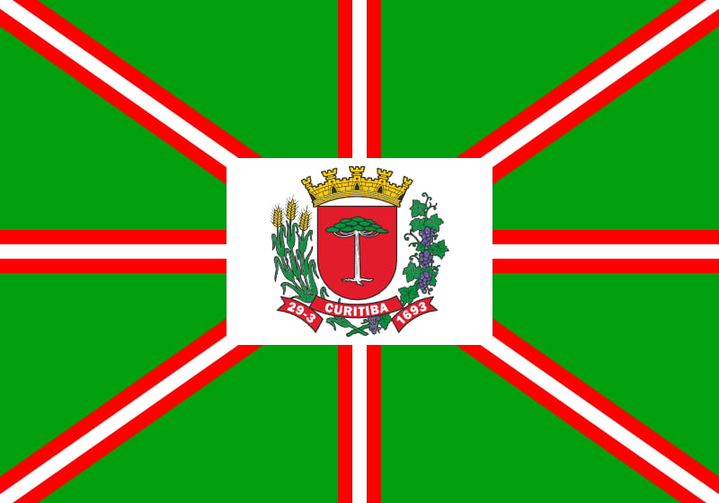

Miguel Enrique Fernandez Rodriguez
Meu nome é Miguel Enrique Fernandez Rodriguez. Nasci na Venezuela e moro atualmente na cidade de Curitiba - PR, Brasil. Sou casado e trabalho na empresa Michelin na área de suporte. Sou apaixonado pelos esportes como futebol e sou faixa preta 2º Dan de karatê shotokan, também amo nadar e corrida.
Curitiba, Paraná

Curitiba é a capital do estado do Paraná e é conhecida por sua organização urbana e qualidade de vida. A cidade se destaca pelo planejamento inovador e pelas soluções sustentáveis aplicadas ao transporte público e ao meio ambiente. Além disso, Curitiba possui diversos parques e áreas verdes, como o famoso Jardim Botânico.